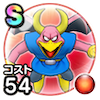

ホークマン
4章4話〜4章8話バギマこころ最大コスト+4スキルの体技ダメージ+10%戦闘時のどうぐHP回復効果+15%イオ属性耐性+10%転び耐性+10% / 7.0点
くわしい特徴
【ランク特殊効果】 バギマこころ最大コスト+4スキルの体技ダメージ+10%戦闘時のどうぐHP回復効果+15%イオ属性耐性+10%転び耐性+10%

4章4話〜4章8話バギマこころ最大コスト+4スキルの体技ダメージ+10%戦闘時のどうぐHP回復効果+15%イオ属性耐性+10%転び耐性+10% / 7.0点
【ランク特殊効果】 バギマこころ最大コスト+4スキルの体技ダメージ+10%戦闘時のどうぐHP回復効果+15%イオ属性耐性+10%転び耐性+10%